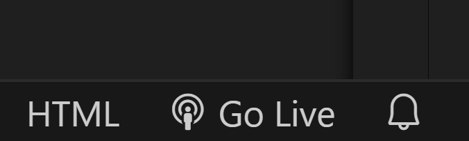

長野高専 情報技術研究部 2024年度資料
基本的な知識
ここではこれからどの分野に進んでも必要になるであろう知識をまとめていきます。
ターミナルの操作
ここではターミナル（いわゆる黒い画面）との対話の仕方を学びます。
シェルの見方
コマンドの見方
ここではgitコマンドを例にとって解説していきます。gitコマンドは簡単に言うと、書いたコードの履歴を保存し、管理するためのツールです。とても便利なツールなので、このサイトを読んで使い方を身につけましょう。
git commit -a -m "ここにはコミットメッセージを入れるといいらしい"
ではこのコマンドはどのような要素で構成されているのでしょうか。 下記の表に示します。
| 要素 | 説明 |
|---|---|
| git | コマンド |
| commit | サブコマンド |
| -a, -m | オプション |
| "任意の文字列" | 引数 |
では具体的に見ていきましょう。
コマンド
ここにはアプリ名が入ります。 ie:git,vim,nvim,emacs
サブコマンド
コマンドで指定したアプリを使って何をしたいのか（どの機能を利用したいのか）が入ります。
この場合のcommitとは、作成したコード等の履歴を保存するコマンドです。
オプション
オプションはコマンドの振る舞いを変更したり、追加の情報を提供したりする物です。
ここで使用している-aや-mは履歴の保存を一回のコマンドで行なうためにつけているものです。すべてこれで行なうとういわけではないので、場合によって使い分けましょう。
引数
引数にはコマンドに渡される追加の情報が入ります。
先ほどの-mの引数としてこのダブルクオーテーションで囲まれた文字列を付けています。
よく使うコマンド集
| コマンド | 説明 |
|---|---|
| ls | 現在のディレクトリにどのようなファイルやディレクトリがあるかを見る。 |
| cd | ディレクトリを移動する。 |
| mv | ファイルの名前を変えたり場所を変えたりする。 |
| mkdir | ディレクトリを作成する。 |
| rm | ファイルの削除などを行う。 |
| pwd | 現在自分のいるディレクトリを確認する。 |
| man | コマンド等の使い方を調べる。 |
これらはほんの一部にすぎません。たくさんあって覚えられたいよ~と思うかもしれませんが、普段から使用していると身に付いていくのでどんどん使っていきましょう。(逆に抜けだせなくなるかも！？)
ls
プログラミング界隈ではフォルダはよくディレクトリ(directory)と呼ばれます。（呼ばれたり呼ばれなかったり）
使い方は簡単でlsと打つだけです。最初はアイコンや色はついていないと思いますがカスタマイズするのはとても楽しいのでぜひやってみて下さい。画像で使っているはexaです。

しかしlsだけでは見えないファイルがあります。（名前がピリオド.から始まってるもの）
そのディレクトリにあるすべてのファイルやディレクトリを見るには-aオプションを使います。
{kind=link}
すると一気に表示されるファイルやディレクトリが増えました。
他にもオプションがあるので調べてみてください。
cd
基本的に下記のように使います。
cd <移動したいディレクトリ>
知ってると便利なもの
| コマンド | 説明 |
|---|---|
| cd .. | 一個前のディレクトリに移動 |
| cd - | 前回cdコマンドを実行したディレクトリに移動。 |
| cd / | ルートディレクトリに移動 |
| cd ~ | ホームディレクトリに移動 |
mv
基本的に下記のように使います。
mv [オプション] <どれを/なにを> <どこに/なにに>
{kind=link}
apple.txtファイルがbanana.txtファイルに名前が変わっている事が確認できました。
{kind=link}
名前と場所を両方変えることもでき、banana.txtがttディレクトリの中にapple.txtとして保存されています。
mkdir
基本的に下記のように使います。
mkdir [オプション] <ディレクトリ名>
rm
rm [オプション] <ファイルやディレクトリ>
ディレクトリを消すときは-rオプションが必要ということを忘れないようにしましょう。
pwd
pwdは自分がいまどのディレクトリにいるのかを見るために使われるコマンドです。
man
英語ですが、検索する手間を省けるので、慣れていきましょう。そのコマンドにどんなオプション等があるのかが一覧できるので、様々な操作を早く覚えることができると思います。
man <調べたいコマンド名など>
man自体についても調べることができます。
webサイトを作ってみよう!
概要
ここでは静的なウェブサイトを作ってみます。
静的・動的（static・dynamic）
ウェブサイトは主に静的(static)なサイトと動的(dynamic)なサイトに分かれています。 これらの違いを見ていきましょう。
静的 static
静的なサイトというのはあらかじめ用意されているHTMLなどのファイルを提供します。 つまり、どのユーザーがそのサイトを閲覧しても内容は変わりません。 例えば学校のホームページなどが挙げられます。
動的 dynamic
静的なサイトはどのユーザーが閲覧しても内容は変わりませんでした。 それに対し動的なサイトというのはユーザーのリクエストや、操作によって内容が変わるサイトの事です。 例えばGoogle Driveなどが挙げられます。
早速作っていこう！
今回作成するのは静的なサイトです。
環境構築
最初にこれからのサイトを作るうえで必要なアプリケーションをインストールしましょう。 今回、開発に用いるアプリケーションは1つだけです。
vscode
インストールするアプリはvscodeです。下記のリンクから自分の環境に合う物を選んでダウンロードしましょう。（自分のお気に入りのエディタがあるよという人はそれを使っても構いません。しかしこれからの講座はすべてvscode前提でプラグインなども使っていきます。）
- vscode（正式名称 Visual Studio Code）
これがvscodeです。（まっさらなvscodeを使うために画像ではinsiderバージョンを使っています。アイコンの色とかが違うと思いますが気にしなくていいです。）

プラグインのインストール
先にこの講座で使うvscodeのプラグインをインストールします。 左側のところから四角が四つあるところを押すとプログインを検索できます。

- live server
これは作成したhtmlファイルを参照して自動でローカルサーバーを立ち上げブラウザから見れるようにしてくれます。検索したときの画像
{kind=link}
これで必要な環境構築は終了です。
ファイルを作る
まず最初に作業を行うフォルダをvscodeで開く必要があります。 左上のFileからOpen Folderを選択します。

そして自分の開きたいフォルダーを選択します。画像
フォルダーを開くと左上に開いたフォルダの名前が表示されていると思います。
{kind=link}

そのフォルダーの名前の右側ににファイルとフォルダーなどのアイコンがあります。 これらをクリックすることでファイルやフォルダーの作成が行えます。
htmlファイルの作成
htmlはウェブページを作成するためのマークアップ言語です。(厳密にはプログラミング言語ではない。) htmlはタグで要素を定義します。 どのタグを使うかでウェブサイトにどの要素が表示されるのかが変わります。
<> 開始タグ
</> 終了タグ
<p>段落</p>
<h1>見出し</h1>
<img src="xxx" alt="画像" />
ウェブサイトの実際に見える部分というのは<body></body>タグの中に書かれます。
step 1
htmlファイルを作成します。

step2
では実際にhtmlファイルを書いていきましょう。
htmlファイル上で!を入力します。画像
画像の状態でEnterを押すとvscodeがひな形を書いてくれます。画像
{kind=link}
{kind=link}
ひな形で作成されるコード
<!DOCTYPE html>
<html lang="en">
<head>
<meta charset="UTF-8">
<meta name="viewport" content="width=device-width, initial-scale=1.0">
<title>Document</title>
</head>
<body>
</body>
</html>
ではbodyタグの中に書いていきましょう。
以下のコードをbodyタグのなかにコピペしましょう。
<h1>Hello World</h1>
<h2>Hello World</h2>
<h3>Hello World</h3>
<button>this is button</button>
Ctrl + sでファイルを保存します。
そうするとファイル名が表示されているところの白い点が消えます。画像
{kind=link}
step 3
結果をブラウザで確認しましょう。
ここで追加したプラグインを使用します。
vscodeの左下にあるGo Liveをクリックします。

するとブラウザが立ち上がりウェブサイトが表示されます。🎉